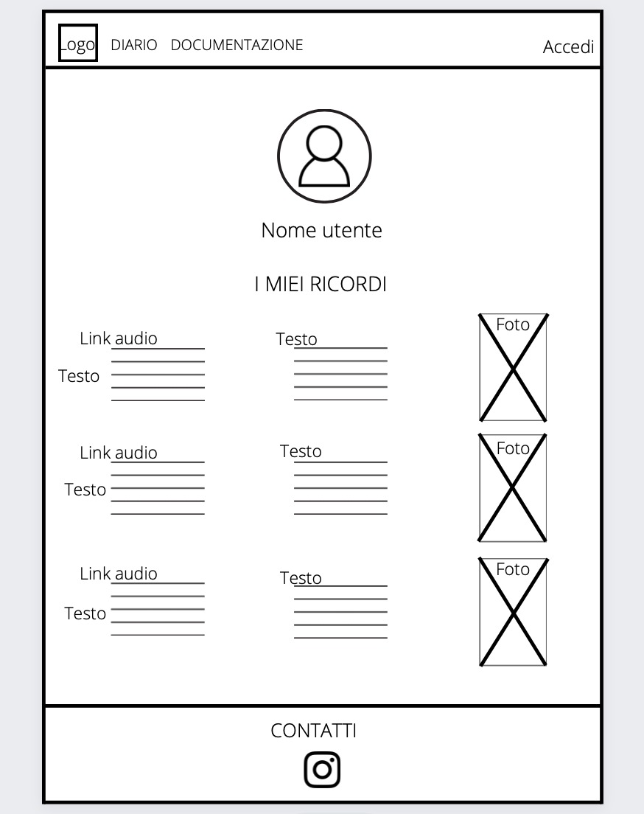
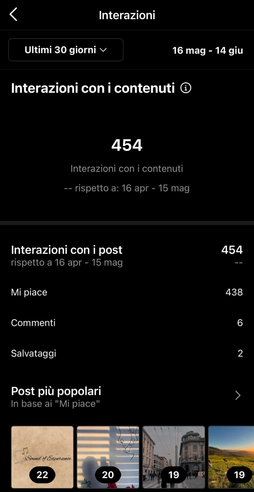
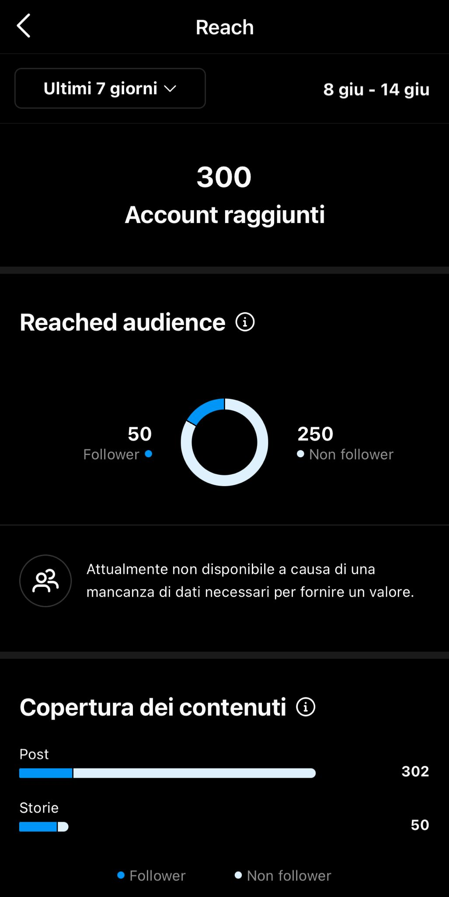
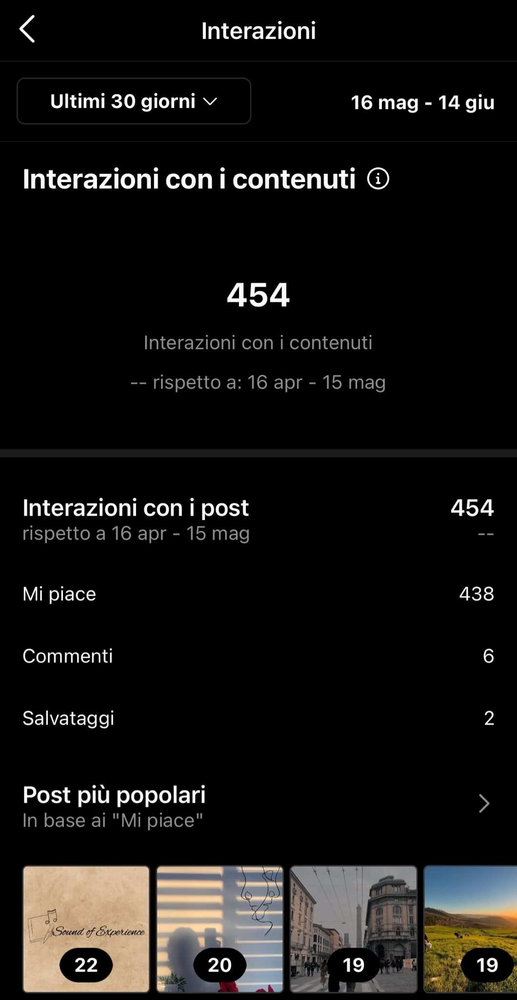
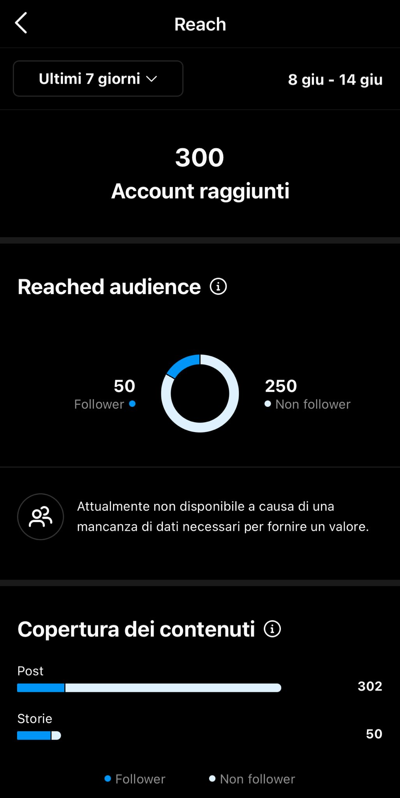
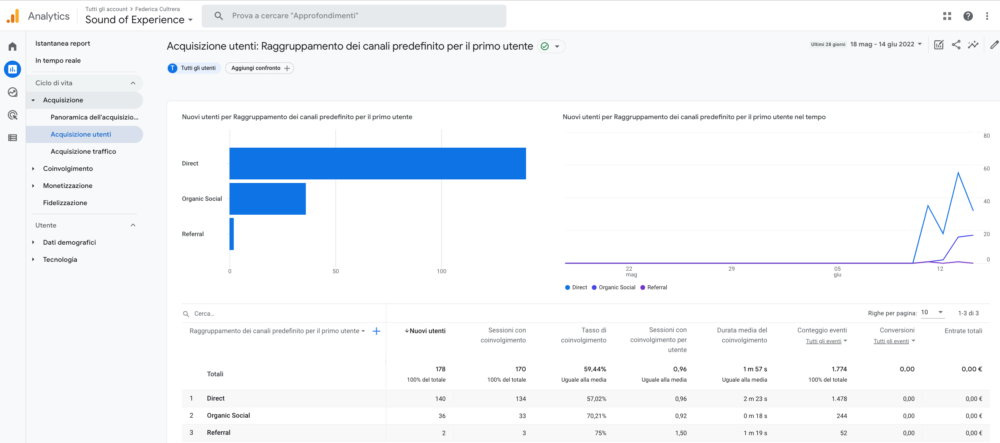
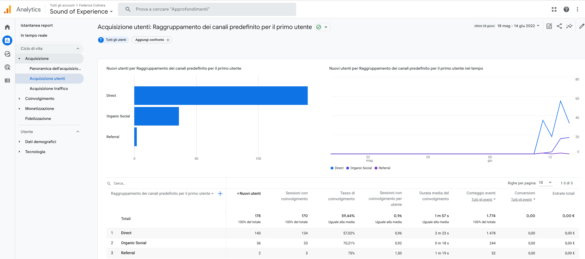

Documentazione
Abstract
Abbiamo realizzato questo sito-diario con l’obiettivo di dare spazio alla persona in termini di emozioni e non di apparenza, in modo da far risaltare quello che è il potere della musica come mezzo di espressione e di comunicazione, ed è proprio questo il nostro valore aggiunto. È un diario aperto a tutti, accessibile a chiunque, in cui la fruizione e la produzione di contenuti sono libere per ogni utente che voglia scoprire nuova musica e unirla alle proprie esperienze.
Project Management Plan
Benchmarking
Obiettivi
Il sito verte sulla condivisone di ricordi, esperienze e viaggi attraverso la forza comunicativa della musica: vogliamo creare qualcosa che si distacchi dal mondo vasto e ormai troppo fittizio e pieno di filtri dei social, concentrandoci sulle emozioni ed esperienze vere. Nei social non è dato abbastanza spazio a questi temi, soprattutto per quanto riguarda il lato emotivo della musica: qui non sarà commerciale o di tendenza, ma riguarderà in primis la persona, posta quindi in primo piano.
Target utente
Il sito è rivolto non solo agli appassionati di musica, ma anche a chi abbia voglia di raccontarsi. Per questo motivo, la fascia d'età risulta più concentrata a partire dalla maggiore età fino agli under 50.
Competitors
Tra i competitors che abbiamo individuato troviamo Staimusic.com, un sito che propone playlist, articoli e interazioni tra gli utenti interessati e Pinterest, un'app/sito sviluppato interamente intorno alle immagini, idee e spunti d'ispirazione. Staimusic.com risulta subito molto ricco di contenuti e risorse, oltre che ben organizzato sul piano della ricerca per tag, generi, classifiche, novità e playlist. Oltre alla vastità di contenuti e generi musicali, il sito presenta la possibilità di cambiare lingua (inglese , italiano e spagnolo) e documentarsi su temi sociali, culturali e politici in riferimento alla musica. Pinterest, con un'interfaccia semplice e intuitiva presenta un'ampissima gamma di immagini legate a parole chiave e tags, che le ricerche siano per pura fruizione visiva o per semplice ispirazione. Nel nostro progetto vogliamo unire queste due dimensioni (musicale e fotografica) attraverso le emozioni, che vengono messe da parte da entrambi i competitor, ma che stanno alla base di ciò che sono la musica e i ricordi.
Struttura e Layout
Architettura del sito
Wireframe
Homepage
Diario
Profilo Utente
Look and feel
• Il logo è stato realizzato con Canva e riprende il tema del "diario musicale", mentre il nome del sito nel logotipo è stato realizzato con il font "Alex Brush", in modo da riprendere la scrittura manuale in corsivo.
• Abbiamo scelto di utilizzare come unico font "Joan" della font family serif per la stesura delle pagine web, in modo da renderle quanto più chiare e lineari possibile.
• Per quanto riguarda i colori, abbiamo selezionato delle palette dalle gradazioni tenui/calde che ricordassero dei vecchi fogli di carta, come in un ambiente personale e vissuto.
Abbiamo selezionato: per navbar e footer #ffefcc, per il background del body #fff7e6.
• Per i link audio abbiamo deciso di intervenire in 2 momenti:
- link mai visitato: blue
- link già visitato: purple
• Tutte le immagini presenti sono state realizzate da noi e da tutti gli utenti che abbiamo coinvolto nella realizzazione del progetto; l'immagine del background dell'intestazione è stata composta e realizzata da noi appositamente per il sito.
Linguaggi e Strumenti
Per la realizzazione del sito abbiamo utilizzato i linguaggi HTML e CSS e la libreria di Bootstrap per: navbar, footer e grid columns del body. Per aiutarci abbiamo anche seguito le indicazioni presenti nel sito WeSchool.com. Per la realizzazione grafica dei wireframe ci siamo servite della piattaforma Canva. Google Font per titolo e testi, Color Shades per la scelta dei colori. Per la stesura e messa a punto dei codici abbiamo utilizzato SublimeText come editor di testo e GitHub per la pubblicazione, mentre JavaScript per la funzione del button Iscriviti e MySQL per la creazione di un server. Infine abbiamo collegato il sito a Google Analytics per monitorarne l'andamento.
Communication Strategy
Background
Sulla base dell'analisi dei competitors citati, abbiamo trovato i pro e i contro da tenere in considerazione e gestito di conseguenza le scelte fatte in termini di comunicazione:
Nel nostro progetto vogliamo unire le due dimensioni proposte dai competitors, rispettivamente quella musicale e quella fotografica, in modo da coinvolgere quanti più utenti possibili.
I competitors hanno sviluppato ampiamente i loro contenuti con le proprie competenze, dunque entrambe le piattaforme citate risultano efficaci per vastità di risorse, fonti e temi.
Abbiamo pensato a Staimusic.com come il nostro competitor primario, mancante solo della componente emotiva che nel nostro progetto sta invece alla base; abbiamo associato anche Pinterest perchè consapevoli che un sito impostato unicamente come blog condiviso sarebbe stato meno coinvolgente in confronto all'impatto emotivo che un testo associato a un'immagine è capace di suscitare.
Obiettivi Comunicativi
Abbiamo pensato alla struttura di un diario musicale online in cui gli utenti potessero iscriversi, creare un profilo e pubblicare le proprie esperienze.
Una volta fatto l'accesso, nella propria area personale sarà possibile visualizzare le precedenti pubblicazioni e, nella sezione Diario, quelle degli altri iscritti al sito.
In questo modo verrà a crearsi una vera e propria community in cui ogni utente, attraverso la musica, potrà empatizzare con l'altro.
In seguito vorremmo introdurre una chat condivisa e visibile a tutti in cui creare uno scambio di esperienze, consigli, idee e ispirazioni.
Non abbiamo avuto la possibilità di realizzare concretamente la nostra idea e ci siamo servite di Instagram per coinvolgere direttamente gli utenti. (vedi sezione Promozione e Valutazione dei risultati)
Target Audience e Messaggio
Il sito si rivolge ai giovani ma anche agli adulti (under 50), agli appassionati di musica, di lettura o fotografia, a chiunque abbia familiarità con il mondo della condivisione web.
La scelta di aver unito la dimensione musicale con il formato del diario ci ha permesso di raggiungere un pubblico ampio: la musica risulta più coinvolgente per i giovani (target primario, più interessati alla ricerca di novità) mentre i racconti degli utenti appassionano gli adulti (under 50, target secondario).
Rispettivamente, i pubblici vengono raggiunti e coinvolti attraverso i social (pagine Instagram, condivisioni), il passaparola degli utenti, piattaforme musicali come Spotify, Youtube, blog musicali, blog personali.
Le persone hanno sempre paura o difficoltà a esprimere le loro emozioni, e quante volte è capitato che una canzone aiutasse qualcuno a capirsi, o a farsi capire? Le emozioni, il ricordare, non sono argomenti di cui aver paura o di cui vergognarsi, ma troppo spesso vengono messe da parte e ignorate, rimangono inespresse, soprattutto nel mondo dei social. Ciò che vorremmo spingere la gente a fare è proprio il raccontarsi attraverso uno dei mezzi più comuni e comunicativi: la musica.
Promozione
Per la promozione del nostro sito abbiamo deciso di creare una pagina Instagram dedicata in cui presentare il progetto e la nostra idea, quindi le funzionalità e i contenuti del sito, e creare una prima corrispondenza con gli utenti. In mancanza della possibilità di pubblicazione in prima persona degli utenti, ci siamo serviti dei dm di Instagram, tramite cui abbiamo ricevuto i materiali da condividere che poi abbiamo provveduto a pubblicare sul sito. Per la prima diffusione del sito abbiamo condiviso il link su Whatsapp per dare inizio al passaparola, e poi anche tramite storie Instagram nella pagina e sui nostri profili personali, ricondivise da altri utenti.
Valutazione dei risultati
Il progetto realizzato ha raggiunto l'obiettivo di coinvolgere subito almeno le persone più vicine a noi, testando in questa prima fase il livello di coinvolgimento e apprezzamento dell'idea.
Abbiamo raggiunto questo primo obiettivo tramite il semplice passaparola e creato successivamente la pagina Instagram che ci ha permesso di pubblicare i primi contenuti forniti da 30 utenti attivi nell'arco di due giorni, aumentare ulteriormente il numero di utenti coinvolti e riuscire a dimostrare così la realizzazione concreta della nostra idea di diario condiviso.
Il nostro obiettivo su Instragram, inoltre, era quello di raggiungere almeno 50 follower e possiamo ritenerci soddisfatte dei dati raccolti tramite gli insights.
Abbiamo monitorato l'andamento del sito tramite Google Analytics e raggiunto i 178 utenti singoli, la maggior parte hanno avuto accesso dall'URL condiviso da altri utenti.
 



 
